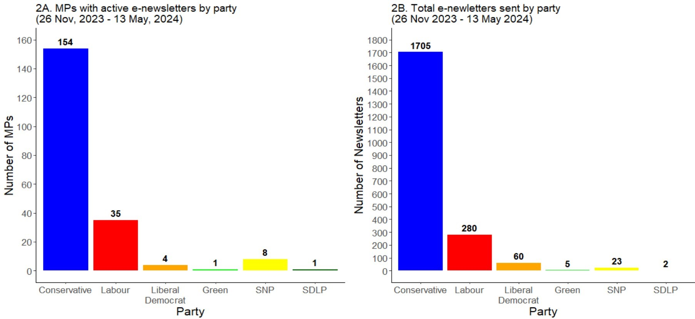

The UK MP Inbox - A Sneak Peek
Every official email newsletter from UK Members of Parliament in one comprehensive database.
In autumn of 2023, I started building The UK MP Inbox as part of Verian’s broader Future of Evidence initiative. Inspired by its American predecessor, The DC Inbox, the UK MP Inbox is a consistently updated, publicly available database of every official email newsletter sent by UK Members of Parliament. These e-newsletters can be used in a wide variety of public sector and academic-oriented social science research, providing important insights into strategic political messaging, policy-making, and the relevant political zeitgeist.
The UK MP Inbox is on track for a full public launch in late summer 2024 (official date TBD), just in time for the looming UK General Election. In the meantime, I have already collected thousands of e-newsletters since late November of 2023, with more coming in each and every day. So while we build up to a launch day, I am happy to share the first of several semi-regular updates on the Inbox’s progress, walking you through the motivation behind this project and providing a sneak peek at the patterns in the data collected thus far.
What trends do we see among the parties?
A quick look at some descriptive patterns makes one thing abundantly clear: Conservative MPs make much more frequent use of e-newsletters than Labour MPs. Figures 2A and 2B present a simple count of the number of MPs with active newsletters (2A) and the total number of newsletters sent since November 2023 based on party (2B).6 There are roughly 4.3 times as many Conservative MPs with active e-newsletters as Labour. As a result, Tory MPs have sent 6 times as many newsletters as Labour MPs.7 It is worth noting that this pattern is partially driven by the disparity in the number of seats between Conservatives and Labour. Yet, even if one were to look at these data as a proportion of each party, it would be evident that Conservative MPs make much more widespread and frequent use of e-newsletters than their Labour counterparts.

Unsurprisingly, the smaller parties lag behind in raw numbers of MPs and total e-newsletters. While party size is the driving factor here, these patterns may also be a function of party structure. For example, while many Liberal Democrats have their own independent websites and e-newsletters, other parties like Sinn Féin appear to take on a much more centralised approach to communication in general. For example, Sinn Féin representatives have profiles on the party website rather than their own individual websites.
Figure 3 depicts the weekly trends in e-newsletters for Conservative and Labour MPs. The dotted lines represent the total number of e-newsletters sent that week, while the solid lines represent the conditional mean trend line (with 95% confidence interval).
The data reveal two basic trends of note. First, MPs tend to schedule their e-newsletters to be delivered towards the beginning or end of the month, resulting in the large spikes seen in the plot. The Christmas/New Years period is the major exception in this pattern. Second, while the rate of incoming e-newsletters from Labour appears to be stable, the rate of Conservative e-newsletters had been on a slight decline prior to the local elections in May. Among Conservative MPs, both the top and bottom e-newsletter rate weeks declined from February to March and from March to April, well before the pre-election period of sensitivity was imposed on 11 April. Finally, we see a substantial spike in the number of Conservative e-newsletters the week of the local elections, driven largely by messages reminding constituents to vote. Interestingly, there does not seem to be a large corresponding spike in Labour e-newsletters the week of the elections.
Unfortunately, this brief descriptive look does not allow for a good assessment of causality (assuming there is a strong causal mechanism at play). Yet, it is not too much of a stretch to hypothesise that this pattern is influenced by controversial stories in the news cycle earlier this year and electoral incentives among Conservative MPs seeking to minimise local losses. It will surely be interesting to see how these patterns develop as the general election looms.
What is next?
There is much more to come from the UK MP Inbox in the near future, so be sure to stay tuned. Expect to see simple analyses just like these in the coming months, exploring trends in the data based on constituency and MP demographics, assessing changes in those trends based on proximity to the election, and comparing those trends to similar patterns among U.S. legislators. I will also release updates on the progress of the Inbox’s public launch and share the official launch date as soon as I can.
In the meantime, if there are any topics you would like me to discuss, questions you would like me to answer, or general comments you would like to share, please reach out to me at adam.ozer@veriangroup.com.
Footnotes
This is particularly relevant as social media companies have increasingly deprioritised political and public policy news content on their platforms. For examples, see Financial Times, NBC, and Slate.↩︎
Free insofar that signing up to receive a newsletter costs nothing. The e-newsletters themselves are penned using staff (and under-appreciated interns) and resources paid for with taxpayer money.↩︎
Some MPs have left or taken office since data collection began in November, hence why the total number of MPs is not an even 650.↩︎
Many of which were quite old and buggy.↩︎
This includes a handful of instances where the sign up form/link exists but is either broken or leads to a 404 error.↩︎
Please note that MPs who have lost the party whip have been grouped in with their relevant party (e.g. Diane Abbott would be counted under Labour). While Lee Anderson and Dan Poulter have switched parties since the beginning of data collection, they are listed as a Conservative MPs in these analyses solely for parsimony.↩︎
Even if we remove John Redwood as a clear outlier, the Tories have still sent 5 times as many e-newsletters as Labour.↩︎
Reuse
Citation
@online{l.ozer2024,
author = {Adam L. Ozer},
title = {The {UK} {MP} {Inbox} - {A} {Sneak} {Peek}},
date = {2024-05-08},
url = {https://adamlozer.github.io/blog/posts/2024-03-18-mp-inbox-sneak-peak/},
langid = {en}
}